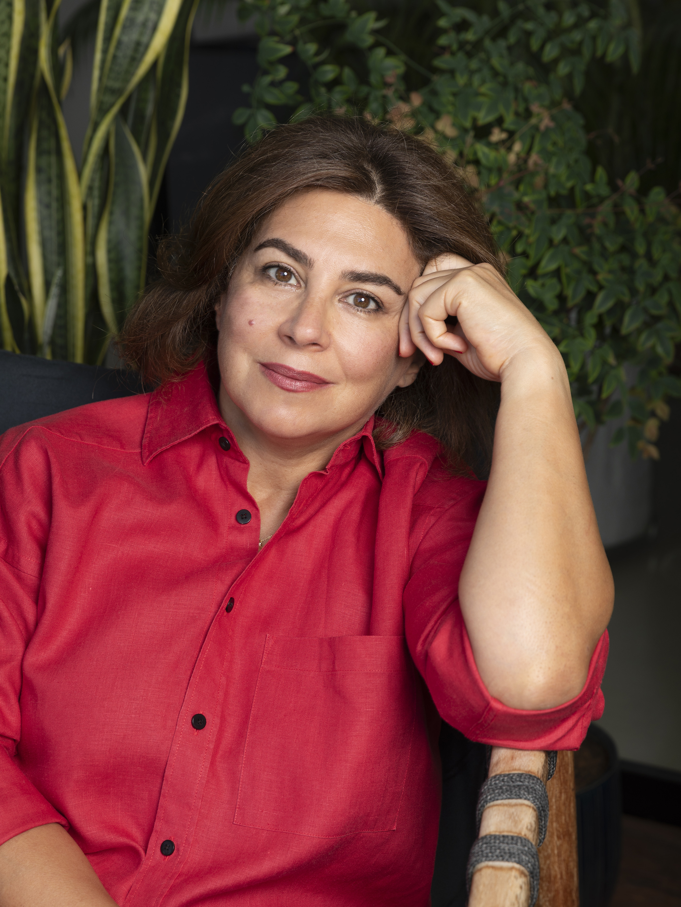

About Rana
Between places, always listening.

Are we born or made creative? I haven’t answered that one but to be fair neither have the scientists—nature or nurture?
Nurture is tricky for me: I was born in Beirut, Lebanon. Growing up in a war country and being constantly displaced (literally, from our beds in the middle of the night to go to the shelter) definitely gives one a lot of fodder. Nurture from parents was definitely accidental. None of my parents were creators per se, but we were always surrounded by books. And I read a lot.
I had always loved acting, loved embodying someone else, or anyone who was not me. I loved to be free from all constraints and while I took acting classes, an acting career was not to be and maybe writing was the next best thing. If I could not be these characters then maybe I could write them. There was a freedom in creating characters who allowed me to transcend the virtual chains imposed by growing up as the youngest of five in a relatively conservative society.
I am plagued by the fear of loss: of those I love, of circumstance, of money but perhaps most of all by the loss of potential. But nothing is ever truly lost is it? Maybe it is just converted. Maybe what we lose somewhere we find somewhere else.
I am an avid puzzler and what’s more puzzling than life itself? I love nothing more than connecting the dots, creating meaning from nothing, from that liminal space that exists between two points. I have lived, and studied, in many places. Perhaps that is why I always feel as if I am always between two places, two states of being.
Do we choose the creative act? How do we interact with our art? I have tried to keep away from writing, battling the forces of self-esteem and worthiness of the craft. Just like someone quitting smoking, I have successfully left it many times. Choosing to exist by writing is choosing a difficult path marred by constant observation and thinking. Constant talking, a constant search for words. One is in constant conversation, if not with the world then with oneself, as if that is the only way to find meaning. Even when we meditate, when we seek to create space, it is only in the hope of eventually translating, converting one signal into another. But it is also a privilege, one that I do not take for granted.